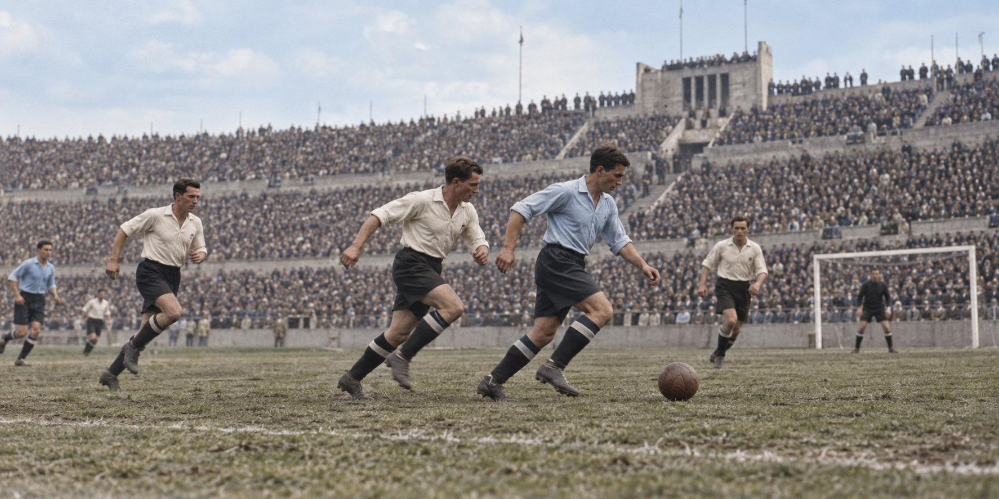

Fundación
De trece selecciones al Milagro de Berna.
La Copa Mundial no nació gigantesca. Empezó con trece selecciones, largos viajes por barco y una sede concentrada en Montevideo. A lo largo de casi un siglo creció en participantes, alcance televisivo, innovación y diversidad de anfitriones.
Comprende primero la historia, consulta después cada edición y termina comparando a las ocho selecciones campeonas.
De trece selecciones al Milagro de Berna.
Brasil cambia la escala deportiva y cultural.
Más participantes, satélite y sedes compartidas.
Datos, VAR y la primera edición con 48 equipos.

La historia del torneo también es la historia de sus rutas: barcos y trenes en los primeros años, vuelos intercontinentales, satélites, pantallas digitales y ciudades anfitrionas conectadas en tiempo real.
Leer la historia completa →Solo ocho países han ganado el torneo. Brasil continúa al frente con cinco títulos; Alemania e Italia le siguen con cuatro. España alcanzó su segunda estrella en 2026.